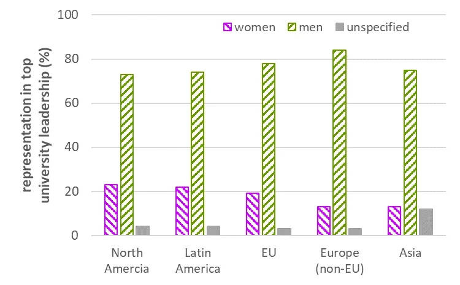

Eight Questions for Women Embarking on Academic Leadership

As the representation of women in university faculties increases, we have increasing chances to engage in the leadership of academic institutions. Leadership positions include intermediate positions of Center Directors, Department Heads, Deans, Vice Presidents, and Provosts as well as top executive positions of President, Rector, or Chancellor. Institutional policies and important decisions regarding hiring, promotion, and allocation of resources are made or at least strongly influenced by those in leadership positions.
Women remain severely underrepresented in university leadership world-wide (see figure, data source [1]). This will only change if we are willing to accept the challenges of top leadership and also to engage in leadership at the intermediate levels that are typical stepping stones toward top positions.
I have described my own experience as Director of the Swiss Federal Institute of Aquatic Science and Technology (Eawag) in a 2019 paper [2]. In reflecting on my more than fifteen years of experience in this position and on my upcoming retirement at the end of this year, I propose eight questions regarding academic leadership. These questions are mainly directed to women who are considering whether to move into positions of academic leadership but may also be useful to women who are already in such positions.
Question 1. What do you want to accomplish in your leadership position? There can be many motivations for seeking positions of responsibility and authority. A leader’s goals can also evolve during tenure in a leadership position. We need to understand our goals to be able to assess whether we are satisfied with our progress, to evaluate whether we need to change our strategy or approach, and to decide how long to continue in a specific leadership position. We also need to consider how well our goals align with those of the institution we will be leading, since lack of alignment can lead to opposition.
Question 2. What constraints will you have to deal with? Are you likely to face opposition in achieving your goals or as a woman in a leadership position? Where would opposition originate? Would it be exercised through official or unofficial channels? To what extent will you be able to use your resources to overcome constraints?
Question 3. What resources will you have at your disposal? Will your resources allow you to achieve your goals and influence others in your organization? If not, can you acquire (or negotiate for) additional resources? Negotiating for additional resources is more effective while you are being recruited rather than after you have accepted a position. It is always better to have clarity and written confirmation of promised resources.
Question 4. What trade-offs will you make to accommodate your new responsibilities? Leadership positions come with new responsibilities and demands for time and energy. Very few of us have excess capacity, which means that we would need to adjust our current allocation of time and energy to accommodate new demands. How will these changes affect us and others who depend on us professionally or personally? Do we have personal and professional support systems in place to enable our leadership activities? Professional coaching or leadership training can help us to address these issues for ourselves and in our professional and personal circles.
Question 5. Who will you be able to depend on for advice and support? All leaders need friends and allies – these are not the same thing. Friends care about our interests and good friends (inside and outside the organization) will tell us what we need to hear, even when we may not want to hear it. Allies, especially those within the power structure of the institution, serve to advance mutual interests. Identify and cultivate your allies as early as possible so that you can call on them when you need to promote change or counter opposition.
Question 6. What are the leverage points for change in your organization? All organizations must have the capacity to change, if only in response to new opportunities or external constraints. At the same time, all organizations are resistant to change. Common levers for change are recruiting new people to the organization and providing incentives for current staff to pursue new directions. We need to understand how these levers operate within our own organization and how we can work with allies to promote change.
Question 7. How is information shared in your organization? There are always both formal and informal channels for information flow within an organization. Informal channels are often selective and can work to disadvantage particular groups or individuals. Formal channels can be based either on ‘push’ (where information is actively disseminated) or ‘pull’ (where information is available but must be sought out). It is impossible to overstate how quickly information (or its availability) is forgotten or how often it must be repeated to have its intended effect.
Question 8. What are the formal and informal power structures in your organization? While formal power structures are displayed in organizational charts, informal power structures are harder to identify. Informal power often arises from personal relationships or access to resources (including information) outside of formal channels. Underestimating or ignoring informal power structures can have unpleasant consequences.
These eight questions may seem somewhat daunting. I do not mean them to distract from the many satisfactions and rewards that come with leadership. Rather, I hope that they will help women to navigate leadership challenges. I have written this specifically for women not only because of our underrepresentation in leadership position. We also face particular challenges because our exercising of authority and agency violates stereotypical expectations for women, which triggers hostility and criticism [3]. With preparation and the support of friends and allies, however, we can be successful and help to shape our academic institutions for the future [4]. Courage!
References
1. Mayo, N. (2019) "One in six universities worldwide led by a woman" Times Higher Education, https://www.timeshighereducation.com/news/one-six-universities-worldwide-led-woman. Data source: International Association of Universities’ World Higher Education Database.
2. Hering, J. G. (2019) “Women as Leaders in Academic Institutions: Personal Experience and Narrative Literature Review”, Pure and Applied Chemistry, 91(2): 331–338, https://doi.org/10.1515/pac-2018-0603.
3. Sieghart, M. A. (2022) The Authority Gap: Why women are still taken less seriously than men, and what we can do about it. Penguin, London, 384 pp.
4. Hering, J. G., Green, S. A., Heckmann, L., Katehi, L. P.B., Maurice, P. A. & Young, S. (2022). A call for an alliance between female academic leaders and early career researchers to improve the academic STEM system. Elephant in the Lab. https://doi.org/10.5281/zenodo.6514731
Thanks to Prof. Sarah Green (Michigan Technological University) and Prof. Emer. Patricia Maurice (Notre Dame) for their helpful comments.
Prof. Janet G. Hering (@JanetGHering)
Director, Swiss Federal Institute of Aquatic Science & Technology (Eawag)
https://www.eawag.ch/en/aboutus/portrait/organisation/staff/profile/janet-hering/show
From the 500 Women Scientists Bern-Fribourg archive. Originally published 18 September 2022.
Explore more stories